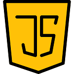
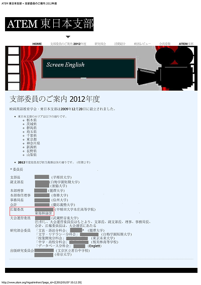

YASUHIKO SHOJI
PORTFOLIO
SKILLS
Premiere Pro
eラーニングの大学で、授業コンテンツ制作に約4年間程使いました。
After Effects
Premiere Pro程の頻度ではありませんが、こちらもeラーニングの大学で、授業コンテンツ制作に時々使いました。
HTML4&5/CSS3
千葉県中央博物館では4をWeb制作に使い、5を勉強しました。

JavaScript
千葉県中央博物館でのWeb制作時に使用し、3を勉強しました。
Photoshop
eラーニングの大学や千葉県中央博物館でのWeb制作時に使用し、一通り勉強しました。
Illustrator
eラーニングの大学で少し使用し、一通り勉強しました。
ABOUT
- 名前：東海林 康彦
- 生年月日：1967年6月7日
- 資格等：色彩検定UC級、TOEIC815点、ほんやく検定4級、など
- 自己ＰＲ：動画の編集は大学時代に英語教材のVHSテープの編集から縁があります。
経歴は、英語教育やマニュアル作成がほとんどです。
マニュアル作成では、日英バイリンガルのものをよく制作してきました。
Web制作にも活かしたいです！
- その他：「お名前ドットコム」でドメイン等を購入したら、解約が大変だったので、
無料のホスティングサービスを利用中です。（苦笑）
2012年頃某英語教育学会の支部の広報を担当し、WordPressの
Webサイトの「デザイン」と管理をしていたのがWebデザインとの
最初の関わりでした。

映画英語教育学会ATEM